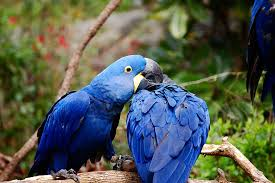
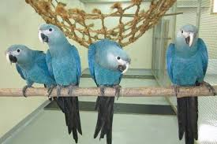
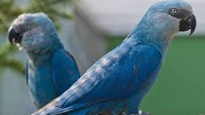
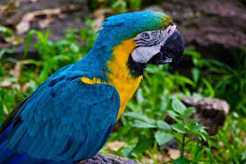
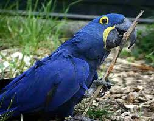
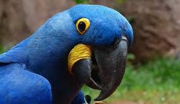

Голубая Ара
Голубой ара (Cyanopsitta spixii) – пернатый представитель семейства попугаевых, а также единственный вид рода Голубые ары из отряда Попугаеобразные. Голубой ара является самым близким родственным видом красного ары.
     Голубой ара относится к редчайшим и исчезнувшим из дикой природы попугаям нашей планеты. Самые последние упоминания о существовании особей данного вида в природных условиях относятся ещё к 2000 году, когда очень активно обсуждались проблемы единственных в своём роде, невероятно выразительного синевато-голубого окраса пернатых.
Внешность
Средняя длина тела взрослого представителя семейства попугаевых, рода Голубые ары и отряда Попугаеобразные составляет всего 55-57 см, при максимальном весе в пределах 400-450 г. Окрас оперения птицы очень красивый, блёкло-голубого цвета. Область головы светло-серого цвета, а живот и грудь имеют окрас оттенков морской волны. На лицевой зоне, от глаз до области надклювья, оперение отсутствует у птицы полностью, но имеется тёмно-серое окрашивание. Лобная зона и ушки птицы, как правило, заметно светлее, чем основной цвет головы ары. Хвост и крылья характерного темно-синего окрашивания. Клюв птицы насыщенного чёрного цвета.
Это интересно! Следует отметить, что молодые особи рода Голубые ары из отряда Попугаеобразные обладают неоперёнными и достаточно светлыми участками кожи на лице.
Радужка у взрослой птицы желтоватого цвета, а лапы имеют очень традиционное сероватое окрашивание. Молодые особи отличаются от взрослых птиц темной радужкой и наличием полоски костяного цвета, которая располагается в центральной части надклювья, но на момент полового созревания такая полоса исчезает полностью.
Места обитания
В июне 2016 года вблизи бразильского городка Кураса была замечена особь, схожая внешним видом с голубым ара. Птицу удалось сфотографировать на следующий день, но полученный снимок имел очень низкое качество. Тем не менее, наблюдавшим орнитологам всё-таки удалось идентифицировать этого попугая по характерному зову как голубого ару. Существует мнение, что эта птица была выпущена из условий неволи.
Голубой ара отличался ограниченной естественной средой обитания. Представители данного вида обитали на территориях прибрежных лесов бассейна реки в северо-восточных районах Бразилии. Такая небольшая область распространения напрямую связана с абсолютной зависимостью этих птиц от наличия деревьев табебуя (Сaraiba). В дупла таких растений пернатыми обустраивались гнезда, семена служили пищей, а крона дерева – надёжной защитой и ночлегом. Пары, а также небольшие группы вполне способны отчаянно защищать свою территорию.